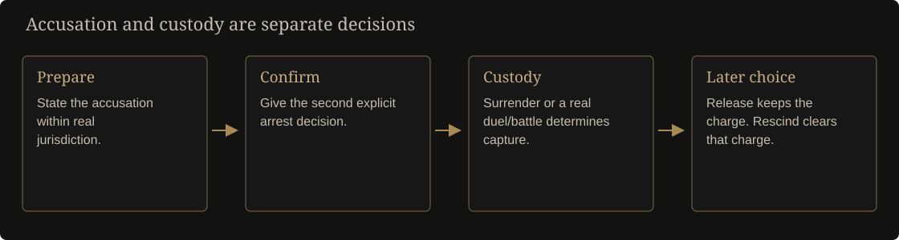

Mount & Blade II: Bannerlord · Reign
Duels, arrests, rulers, and civil war
Understand duels, accusations, custody, ruler judgments and civil war.
Development guide · November 24, 2026 · Edition notes
Choosing a duel
Preview included#An eligible NPC can agree to a duel in individual conversation. Read the Bannerlord Reign Duel prompt before starting; cancelling the start is different from losing a fight.
Use Alt+A in the ready individual conversation to select the supported duel request and terms.
| Mode | What is at stake |
|---|---|
| Practice | Private, nonlethal sparring at ordinary hit damage within the scene. Play until the practice bout is decided. The opponent can remember it without public duel glory, disgrace, or automatic relationship rewards. |
| Training Together | Private, nonlethal sparring with reduced hit damage for a longer session. Press Tab with chat closed to end the training when you are ready. |
| Honor | A nonlethal challenge whose outcome can enter public combat history, news, and reputation. |
| Lethal | A real death risk under the confirmed terms. Never treat it as ordinary practice. |
Nonlethal fights protect campaign health after the scene. Practice can end quickly because hits deal their ordinary damage during the bout. Both practice modes can give weapon experience, including from blocked hits. For longer sparring, choose Training Together. For troop training or arena drills, use the keep's Training Yard or the arena master.
The mission outcome decides who won. Narrating victory does not replace the fight. A duel used for an arrest has custody consequences and is separate from private practice. Existing native learning modifiers still affect actual skill gains.
Arrests: accusation, confirmation, and custody
Preview included#You need real jurisdiction: an eligible player-owned holding, an accused person in your party, or the supported encounter with their party. An insult in a distant conversation does not grant universal arrest power.
Prepare an accusation with its reason, then explicitly confirm the arrest. These are separate steps. Reign considers cause and evidence; a serious unsupported accusation can hurt relationships and public standing. A rumor is not automatically a justified conviction.
Use Alt+A for the supported prepare, confirm, release, or rescind action. Opening the selector does not itself order an arrest.
During a party encounter, the accused can surrender or resist. A nonlethal arrest duel or native battle may follow. You gain custody only when the actual result places the person with you.
An eligible adult in the same settlement or already in your party can also personally surrender through Surrender to me. Afterward, check your party's prisoner roster for the hero. To hand over a named captive from your party, use Give prisoners with a separate receiving party or meet the authorized recipient at their dungeon.
Release frees the prisoner but retains the accusation. Rescind clears that accusation and its associated effect and releases the accused. Protected custody of your own realm's or clan's arrested people differs from ordinary random escape; deliberate release, death, and actual battle outcomes still matter.

Captured rulers and sovereign judgment
Preview included#NPC rulers tend to remain at a secure capital until they can lead a substantial present army. They can relocate when a capital is lost and return after a campaign. These rules do not take away the player's freedom to travel. An army still approaching is not the same as soldiers already present.
Defeating a ruler does not guarantee capture. When a sovereign is captured, the capturing sovereign has special decisions. A player vassal or mercenary does not acquire that sovereign power just by holding the prisoner; direct handover is distinct from a routine dungeon donation.
Ordinary-war judgments can include an execution sentence, exile with concessions and a replacement ruler, or submission and annexation. Read the permanent political outcome and temporary settlement effects. Sentencing is not the same as actual death. During a pending sentence, normal sale or ransom cannot bypass it, but escape or rescue can cancel the pending outcome.
A captured sovereign must spend a waiting period in custody before a verdict. A valid handover retains the original capture date. An execution verdict has its own later deadline. Read the latest news to see whether the judgment is pending, cancelled, or carried out. A new sovereign does not automatically inherit an unfinished order issued by their predecessor.
An unauthorized vassal execution can anger both realms without granting the sovereign settlement package. The ruler feature also has life-and-death requirements; review its Options before assuming a no-death campaign preference will remain compatible. It changes no combat-death difficulty by implication.
Rebellion and civil war
Preview included#Disaffected NPC vassal leaders can begin a rebellion, and other clans choose sides. A non-ruling player vassal can also seek a rebellion through an accepted supported action. A promise of sympathy is not a clan transfer; a recruited lord must explicitly accept.
A rebel realm is a real political faction. Capture, death, surrender, and rulership determine its decisive outcomes; an unrelated foreign power capturing a leader is not automatically victory for either civil-war side. Ordinary peace cannot simply skip the special resolution.
To end an active civil war by recognizing the rebels as an independent realm, use Alt+A and Resolve civil war in an eligible conversation. The rebel side acts, and both current rulers must approve the same terms for that movement. Use Surrender rebellion for capitulation. Reunification comes through the civil-war outcome and judgment process.
Secret support for a future rebellion is distinct from joining one already declared. A pledge can bind a named clan to the challenge against a particular ruler while its current allegiance remains in place. Informers, refusals, summons, renunciation, and defiance can all become part of that political history.
The later ruler-judgment flow distinguishes recognized rebel independence, execution under its sentence rules, and reunification under a victorious rebel leader. Loyalist victory can lead to freedom, imprisonment, or execution judgments for defeated leaders. These are substantial campaign choices and can affect the player as well as NPCs.
Civil-war outcomes differ from ordinary conquest. Do not assume an ordinary-war annexation or settlement-effect package applies to a rebellion. Pending judgments and the sequence of decisions survive saving; inspect the remaining queue rather than assuming the first ruling resolved everyone.